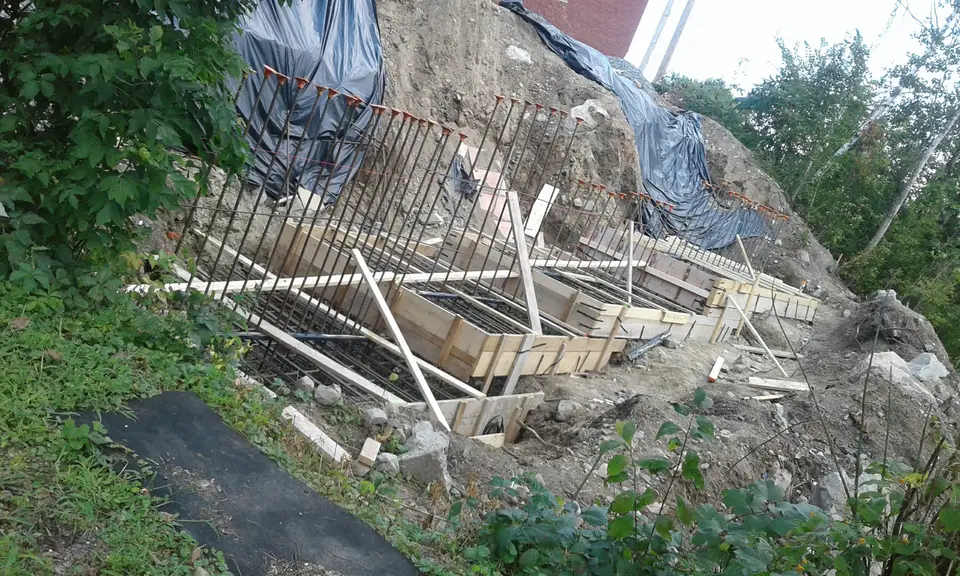
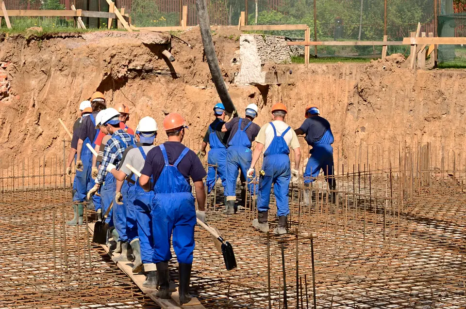
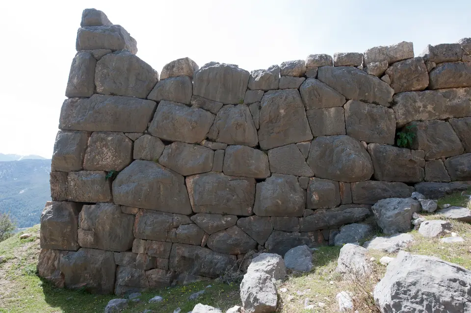

Maçon à Tournefeuille
Votre artisan maçon à Tournefeuille pour construire, agrandir et rénover vos ouvrages de maçonnerie.
Travaux de gros œuvre et maçonnerie à Tournefeuille
Nous intervenons sur la commune de Tournefeuille pour réaliser vos ouvrages de maçonnerie lourde, terrassement de fondations et surélévations de bâtis.
Sensibles aux impératifs d'isolation et d'intégration architecturale, nous sélectionnons des blocs de maçonnerie à forte inertie thermique et des liants adaptés à chaque environnement.
Nous vous assistons dès la phase de conception afin de planifier les étapes clés du gros œuvre et assurer une exécution sans surprise dans les délais impartis.
Interventions courantes sur Tournefeuille
Chantiers réalisés près de chez vous



Communes limitrophes également couvertes
Notre équipe de maçons qualifiés déploie régulièrement ses moyens techniques dans les secteurs adjacents.
Maçon à Colomiers
Maçon à Toulouse
Votre projet de maçonnerie à Tournefeuille
Sollicitez une intervention ou un chiffrage personnalisé pour vos travaux de bâtiment.